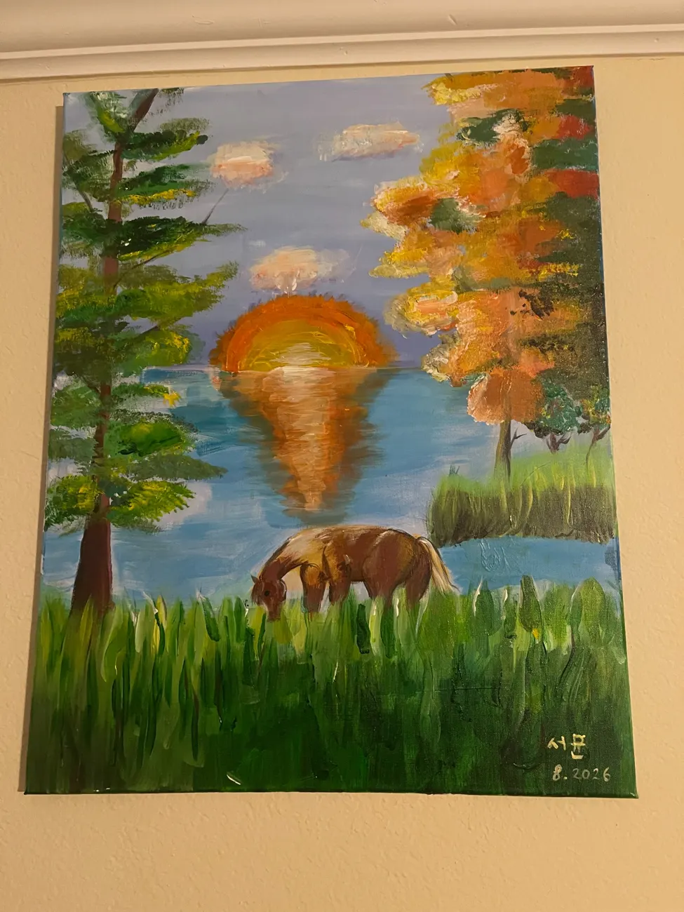
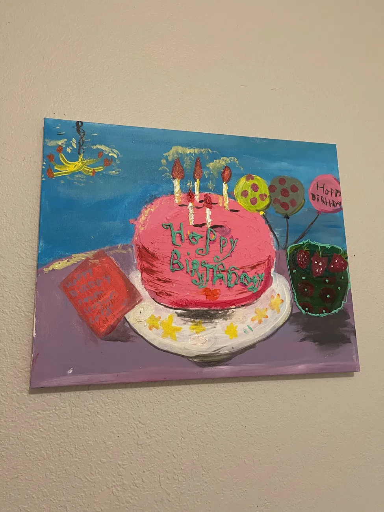
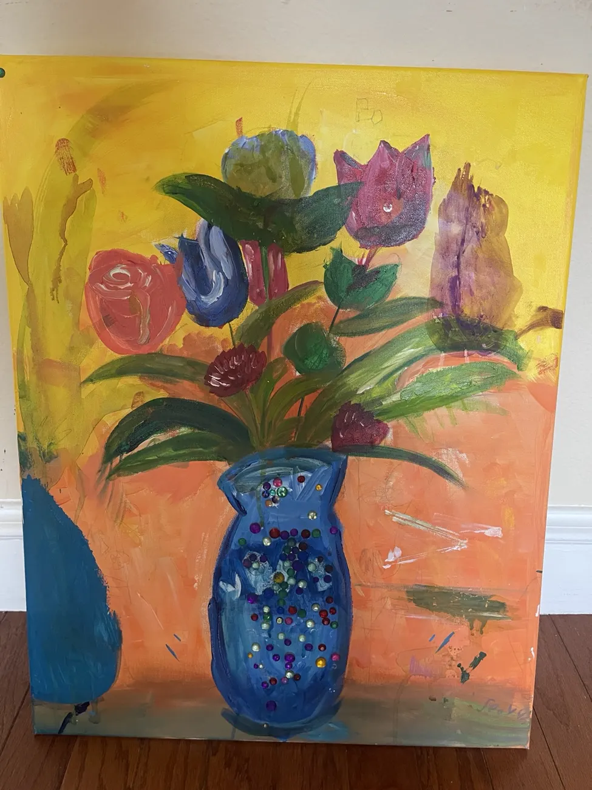
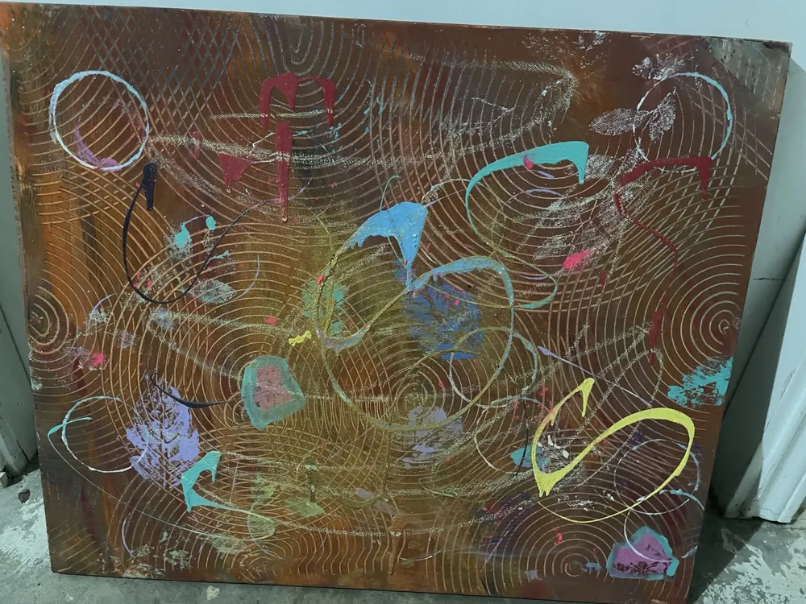

Sunset Pasture
A horse grazes beside a quiet lake as warm sunset colors ripple across the water. Deep greens and golden trees frame the scene.
$999.00 USD
BuyTHE WORLD, IN COLOR
A quiet pasture. The last light of day. An invitation to see the everyday a little differently.
Explore the gallery ↗
THE COLLECTION
A horse grazes beside a quiet lake as warm sunset colors ripple across the water. Deep greens and golden trees frame the scene.
$999.00 USD
Buy
A pink birthday cake with glowing candles, colorful balloons, and a handwritten card, set against a bright blue background.
$999.00 USD
Buy
Colorful flowers and sweeping green leaves rise from a blue vase decorated with sparkling accents, against a warm yellow and coral background.
$999.00 USD
Buy
Fine circular lines weave across a warm brown ground, punctuated by expressive loops and splashes of turquoise, blue, pink, and yellow.
$999.00 USD
BuyABOUT THE ARTIST
Finding a little wonder
in the world around us.
Seoyun paints still lifes and landscapes inspired by everyday moments. A birthday table filled with color, a horse resting beside the water, and the glow of a setting sun become starting points for paintings that invite a closer look.
In Sunset Pasture, deep greens and golden trees surround a lake washed with warm evening light. Happy Birthday brings a different kind of warmth: a pink cake, glowing candles, balloons, and a handwritten card. Together, these works move between the quiet of nature and the joy of celebration.
Visible brushstrokes and layered color give each canvas its own texture and character. The gallery offers both full views and close-up photographs, so you can explore the small details as well as the whole composition. Whether a painting recalls a familiar place or a happy memory, take your time and find the work that speaks to you.
BRING A LITTLE COLOR HOME
Choose a painting to prepare a purchase inquiry. Availability, pricing, dimensions, and delivery will be confirmed before payment.